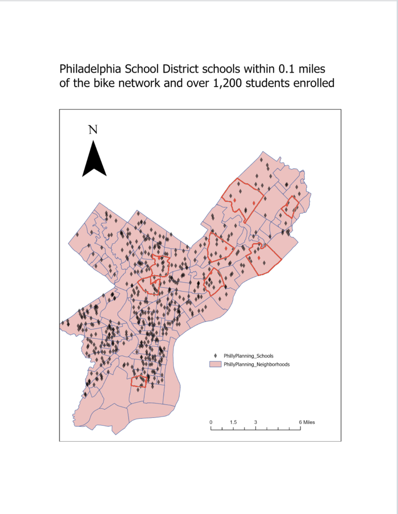

Map Narrative
Philadelphia is home to a growing bike network, but not all schools benefit equally from its reach. This map identifies Philadelphia School District schools that are both within 0.1 miles of the bike network and have an enrollment of over 1,200 students — two criteria that together highlight high-priority locations for cycling infrastructure investment. By layering school locations against the city's bike lane data, the map reveals which large, high-density schools already have strong proximity to cycling routes. The highlighted neighborhoods in red show clusters where this overlap is most concentrated, pointing to areas where safe biking infrastructure could have the greatest impact on the most students. This analysis helps urban planners and school district officials understand where bike-to-school initiatives would be most effective. Ultimately, the map partially solves the problem of identifying equitable cycling access by giving decision-makers a clear spatial picture of where resources and outreach efforts should be directed.
GIS Tools & Skills Used
- Buffer Analysis — creating 0.1-mile buffers around the bike network
- Select by Attribute — filtering schools with enrollment over 1,200
- Select by Location — identifying schools within the bike network buffer
- Layer Symbology — styling neighborhood and school layers for clarity
- Map Layout & Scale Bar — composing a clean, readable final map